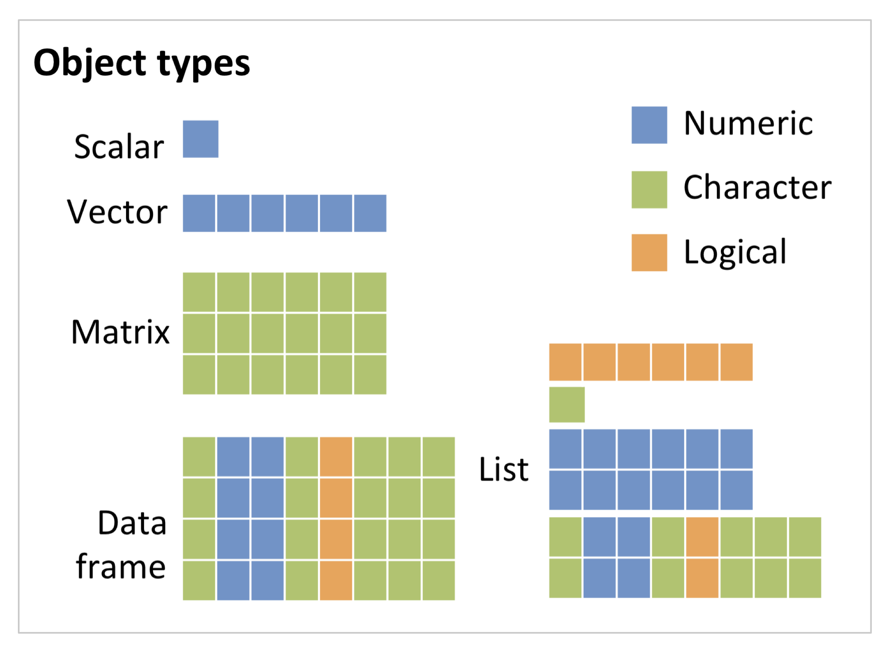

RStudio project
Open the RStudio project that we created in the previous session. We recommend using this RStudio project for the entire course and within the RStudio project create separate R scripts for each session.
# Session 4: Operators and objects and save the file in
your folder “scripts” within your project folder, e.g. as
“4_OperatorsObjects.R”You can use R as simple calculator. Simply type in the expressions; they will be executed immediately.
1 + 2 * 3
(1 + 2) * 3
2 * 5 - prod (2, 5)
sqrt(25 ^ 2)
sin(pi / 2)
0 / 0Check out ?Syntax to learn about the precedence of
operators. If in doubt (or simply for a better overview) use round
brackets.
Useful arithmetic operators:
^ or **: power* / / : multiplication / division+ / - : addition / subtraction%/% / %% : integer division / moduloRelational operators:
==, != : equal, unequal>, >= : greater than, greater or
equal<, <= : smaller than, smaller or
equal! : negationLogical operators:
&&: and, only first element is
compared&: and, pairwise comparison||: or, only first element is
compared|: or, pairwise comparisonAccessing data:
$ @: component / slot extraction[ [[: indexingUseful mathematical functions:
max(), min(), range() :
extreme valuessummary() : statistical summaryabs() : absolute valuessqrt() : square rootround(), floor(), ceiling() :
roundsum(), prod() : sum, productlog(), log10(), log2() :
logarithmexp() : exponential functionsin(), cos(), tan(),
asin(), acos(), atan() :
trigonometric functionsunique() : unique values of a vectorna.omit() : removes vector elements that are
NA, or rows from matrices and data frames that contain at
least one NA element.Numeric constants:
pi : the number \(\pi\)Inf, -Inf : infinityNaN : not defined (not a number)NA : Missing value (not available)NULL : empty valueIn principle, all data structures and functions are objects in R. You can get a list with all objects contained in the current workspace by typing:
ls()We can assign own objects using the assignment operator/arrow
<-.
x <- seq(1, 5)The results of any operation assigned to an object are usually not printed in the console. If you want to see the results in real-time, simply enclose the entire command in brackets:
(x <- seq(1, 5))## [1] 1 2 3 4 5R is case sensitive. X is not the same as x.
X <- 1
ls()Use rm() to remove objects from your workspace.
rm(X) # removes one or more objects
rm(list = ls()) # removes all objects from your workspaceNaming variables/objects:
There is no single naming convention in R. Even in the same package, multiple conventions might be used simultaneously. But usually, it’s advisable to stay consistent. Basically, there are five naming conventions to chose from:
adjustcolorplot.newnumeric_versionaddTaskCallbackSignatureMethodDespite this freedom of choice, there are also some rules. Object
names have to begin with a letter and may not contain any special
characters except dots (.) and underscores (_). Also be careful not to
use names of built-in functions and constants (nothing bad will happen,
it may just create confusion), e.g. c(),
t(), pi. Reserved words can be found here:
?ReservedRelational and logical operators are mainly relevant for complex data requests or manipulations, and for programming, e.g. in control flows.
Relations:
?Comparison
4 < 3
(1 + 3) != 3Logical constants and operations:
?Logic
2 < 3 && 3 < 4
2 < 3 || 4 < 3
2 > 3 || 4 < 3
(3 < 2) && (4 == (2 ^ 2))
(3 < 2) || (4 == (2 ^ 2))Examples help to understand the difference between the operators
&& resp. || and &
resp. |. The shorter form performs elementwise comparisons
in much the same way as arithmetic operators. The longer form evaluates
left to right examining only the first element of each vector.
Evaluation proceeds only until the result is determined. The longer form
is appropriate for programming control-flow and is typically preferred
in if-clauses.
c(3 > 2, 3 > 2) # c() means 'concatenate' and combines arguments into a vector
c(3 > 2, 3 > 2) & c(3 < 2, 3 > 2)
c(3 > 2, 3 > 2) & c(3 > 2, 3 < 2)
c(3 > 2, 3 > 2) && c(3 > 2, 3 < 2) # only first elements compared
c(3 > 2, 3 > 2) && c(3 < 2, 3 > 2)Internally, TRUE is coded as 1 and FALSE as
0. Hence, you can also calculate with logical values. You will learn to
appreciate it when doing data manipulations later on.
x <- c(3, 5, 1, -4, 0, -2, 4) # creates vector x
x < 0 # which element of x is smaller than 0?
sum(x < 0) # How many elements of x are smaller than 0?Note that T and F can be used instead of
TRUE and FALSE, but they are not reserved for
that purpose. This might lead to problems further down the track:
T == TRUE
F == FALSE
T <- F
T == TRUE ## T is no longer TRUE
# Let's assign back, so we don't accidentally run into trouble later on
T <- TRUE
F <- FALSEIt is therefore recommended to avoid using T and
F and use TRUE and FALSE instead
(refer to this very short R
style guide by Hadley Wickham for further details on best practice
in styling your code).
R distinguishes five basic (atomic) data types:
Character: represents string values (letters, words, sentences, etc.) in R
(first_name <- "Charlie")Integer: a simple integer number (positive or negative)
(shoe_size <- 41)Numeric: a decimal number
(seminar_hours <- 1.5)Factor: refers to a categorical variable. R stores the value of the factor as well as the levels (categories) that it could potentially take.
# When declaring a factor, you can explicitly say what are the other levels/categories
(gender <- factor('female', levels = c('female','male','diverse')))
# Alternatively, you can convert another data type (here, character) to factor
(gender_groupA <- factor( c('female','male','diverse','female','female','male') ))Boolean: true and false values
(hungry <- TRUE)NA (Not Available) indicates missing values. For
example, imagine a dataset with daily weather measurements over a longer
period of time. On one day, the batteries of the weather station were
empty and no measurements were taken. For integrity reasons, this empty
day will still be stored in the data set but will be assigned the
missing value ‘NA’. Knowing about NAs in your data is important because
per default all functions will return NA if your data include NA.
mean(c(1, 5, 2, NA, 10, 4, NA, 7))Fortunately, you can exclude NAs from most operations.
mean(c(1, 5, 2, NA, 10, 4, NA, 7), na.rm = TRUE)You can test for NAs with is.na()
is.na(c(1, 5, 2, NA, 10, 4, NA, 7))
(na.omit(c(1, 5, 2, NA, 10, 4, NA, 7))) # remove the NA value.R distinguishes several objects types that differ in the complexity of data structure: scalars and vectors, matrices, arrays, data frame and list. Vectors, matrices and arrays can only contain a single data type. Data frames can contain different data types in separate columns but all columns need to have the same length. Lists can contain different object types and data types.

Vectors:
There are many different ways to generate vectors in R. We have
already learned concatenating c().
Sequences:
1:5
5:1
seq(5, 10, by = 0.5) # create a sequence between 5 and 10 with an interval of 0.5
seq(5, 10, length = 21) # create a sequence between 5 and 10 with total length of 21
seq_len(5) # create a sequence of integers between 1 and 5Replicates:
rep(x = 2, times = 10)
rep(2, 10)
rep(c(1, 6, 5), 2) # replicate the vector (1,6,5) twice
rep(c(1, 6, 5), each = 2) # replicate each element of the vector (1,6,5) twiceYou can also create a vector with named elements.
pets <- c(Cat = 2, Dog = 1, Chicken = 7)Matrices: two-dimensional object with rows and columns containing a single data type (e.g. numeric, character, etc.)
# create a matrix with the numbers (1,2,3,4) ordered in two rows. The function automatically fills up the columns first.
(x_mat <- matrix(data = 1:4, nrow = 2))
# same as above:
(x_mat <- matrix(1:4, 2))
# create a matrix with the numbers (1,2,3,4) ordered in two rows but fills up the rows first:
matrix(1:4, 2, byrow = TRUE) Array: more-dimensional object containing a single data type (e.g. numeric, character, etc.)
# create a three-dimensional array with four indices in first dimension, three indices in second dimension, and 2 indices in third dimension
(x_arr <- array(1:24, c(4, 3, 2))
)Data frame: two-dimensional table with rows and columns where different columns can contain different data types.
(veggy_shopping <- data.frame(grams=c(500, 1000, 1000, 300, 200),
veggy=c('salad', 'courgette', 'aubergine', 'onions', 'beetroot'), stringsAsFactors = FALSE))Lists: contain different “slots” with different object types.
(shopping <- list(post = "stamps",
farmers_market = veggy_shopping,
bank = 60,
bakery = c('whole grain buns', 'rye bread')))It is important to have a good understanding of the characteristics
of the objects that you have in your workspace. Otherwise the risk to
make mistakes while working with them increases. There are different
functions that give you certain characteristics (e.g. ncol
or length) or simply allow you to take a better look at the
structure of an object (e.g. View()).
Test it yourself
View().Use str() for displaying the object structure.
str(x_mat)
str(x_arr)
str(veggy_shopping)
str(shopping)Another very useful feature is that we can draw samples from a vector using sample(). As arguments, it takes a scalar or vector from which to draw, and the number of samples to draw. Per default, samples are drawn without replacement.
sample(1:30, size = 20) # without replacement## [1] 4 6 19 22 7 28 2 9 13 18 26 29 15 10 24 27 16 17 8 12sample(30, size = 20) # same## [1] 22 27 16 12 2 25 8 5 21 6 9 18 11 15 23 26 14 3 29 24sample(1:30, size = 20, replace = TRUE) # with replacement## [1] 22 13 15 17 21 2 4 2 8 21 20 6 4 22 12 23 21 23 8 13sample(letters, 10)## [1] "z" "p" "k" "d" "s" "r" "f" "a" "g" "v"Each element of an object type is internally assigned an index (positive integer ‘address’) and you can retrieve single elements or a subset of the object by addressing these indices. Square brackets are used for indexing.
y <- c(2,0,0,3,7)
y[3] # retrieve the 3rd element of vector y
y[3:4] # retrieve a sequenceWe distinguish four kinds of index vectors: logical, positive integer, a negative integer for excluding elements (inverse indexing), and character indices if we have named vectors.
Indexing vectors (one dimension):
# Logical index vector: We ask which values in y are above 0, then we use this expression as index
y > 0
y[y > 0]
# We add a missing value NA to vector y and store it in a new object:
(y2 <- c(y, NA))
# logical index vector: we first ask whether any value in vector y2 is NA, then we use this as logical index vector
!is.na(y2)
y2[!is.na(y2)]
# index vector with positive integers: we can use sequences, but also concatenate any positive integers for indexing using c():
y2[c(1, 3:4)]
# index vector with negative integers: negative indexing results in ignoring the values
y2[-c(1, 3:4)]
# Character indexing: We first define a vector with named elements, then we can access the values by their names:
(Fruits <- c(Orange = 5, Banana = 10, Apple = 1, Pear = 20))
(Grocery <- Fruits[c("Orange","Apple")]) # character index
# You can also modify single elements.
Fruits["Banana"] <- 0Test it yourself
y2 show elements 1, 3, 5 using positive and
negative integersGrocery without changing
FruitsIndexing matrices and data frames: Matrices and data frames are structured in rows and columns. In both cases, indexing a single element requires two index values - the first specifying the row and the second one the column.
# Matrix and data frame
x_mat[2,1] # element in second row, first column (returns single value)
x_mat[ ,2] # entire second column (returns vector)
x_mat[1, ] # entire first row (returns vector)
# Character indexing: We define a matrix with column names and row names, then we can access rows, columns, or specific values vy their names
mat2 <- matrix(3:14, ncol=3) # define matrix
colnames(mat2) <- c('Length', 'Size', 'Weight') # add column names
rownames(mat2) <- c('plant_1', 'plant_2', 'plant_3', 'plant_4') # add row names
mat2
mat2[,'Length']
mat2['plant_2',]
mat2['plant_4','Weight']Test it yourself
mat2,
e.g. columns 1 and 3?Data frames can also be indexed with positive integer index, negative integer index, logical index and character index. Additionally, in data frames (and lists) we can access columns using the $-operator.
# character index
veggy_shopping["grams"] #column `grams`, using character index
# in data frames and lists, elements can be accessed using the $-operator
veggy_shopping$grams # column `grams`Test it yourself
attach() and instead use the $-operator you were just
introduced to.Nobody knows an entire coding language and can immediately develop perfect code from scratch that does exactly what we want. More often than not, code will result in errors and perhaps the most integral part of writing and developing code is dealing with errors. Common errors are:
Calling a function without loading its package:
# try to load ggplot function
ggplot() # ggplot2 package not loaded## Error in ggplot(): konnte Funktion "ggplot" nicht findenCalls to unassigned variables:
seq(from = k, to = 10, by = 2) # k is not yet assigned## Error in seq(from = k, to = 10, by = 2): Objekt 'k' nicht gefundenIncorrect function arguments:
seq(from = 2, to = 10, by = 2, 1) # the final 1 is incorrect## Error in seq.default(from = 2, to = 10, by = 2, 1): zu viele Argumenteseq(from = c(2, 3), to = 10, by = 2) # `from` argument shouldn't be a vector## Error in seq.default(from = c(2, 3), to = 10, by = 2): 'from' muss Länge 1 habenseq(from = 2, to = 10, by = -2) # `by` argument should be positive## Error in seq.default(from = 2, to = 10, by = -2): falsches Vorzeichen im 'by' ArgumentMissing function arguments:
mean(na.rm = TRUE) # missing vector## Error in mean.default(na.rm = TRUE): Argument "x" fehlt (ohne Standardwert)Syntax (“grammar”) mistakes:
seq(from = 2, to = 10 by = 2) # missing a comma
seq(from == 2, to = 10, by = 2) # extra eq sign
seq(from = 2, to = 10, by = 2)) # extra closing bracket## Error: <text>:1:23: unerwartetes Symbol
## 1: seq(from = 2, to = 10 by
## ^How to solve errors:
Virtually everything is possible as long as it results in a working
solution (and you don’t copy other people’s work without giving proper
credit).
The most common trouble-shooting options:
class(), str()
to understand your data structure better).Exercises:
Task 1: Take a look at the iris data set we worked with
in the previous practical:
Task 2: Make a random subset of the iris data set.
Randomly sample n=30 rows. - Hints: make a sequence ranging
from 1 to the number of rows in ìris, use
sample to draw a random subset and use the resulting vector
as index vector to subset the rows of iris. Search online
or check the practicals whenever you do not know which function to
use.
Task 3: Now, let’s have a look at the data set
airquality:
city and
year.